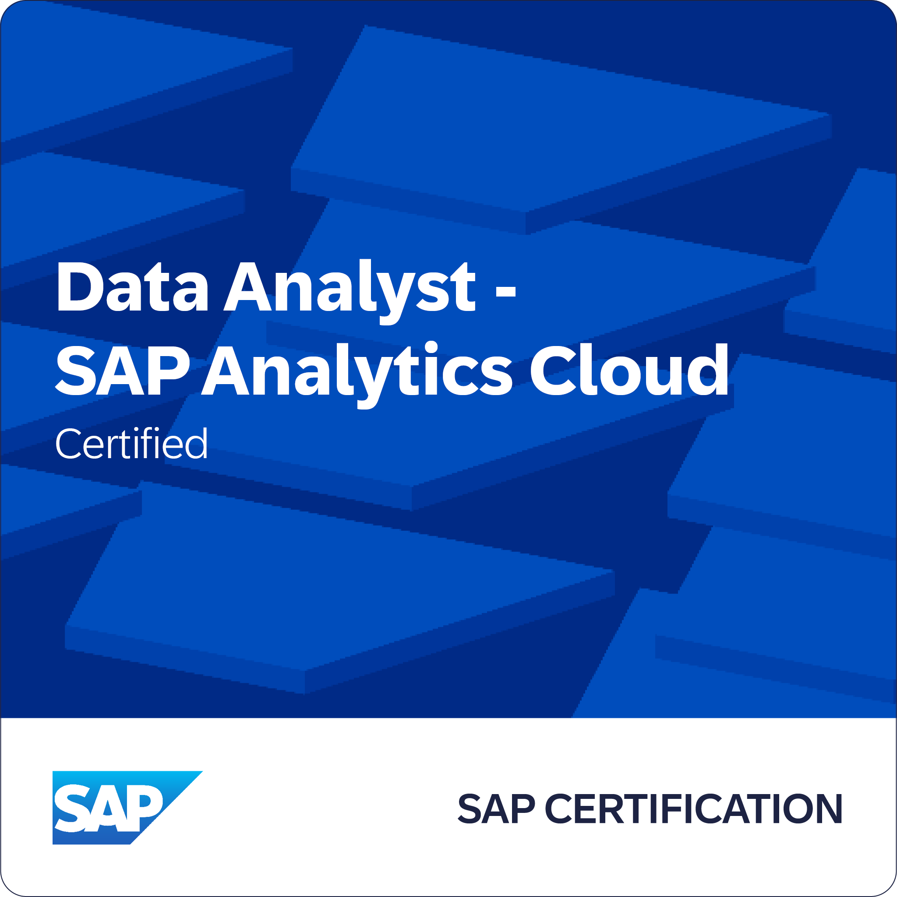

0 + Certification completed
I'm Anand Kumar Bhagat, an SAP Certified Analytics Professional. I build reporting, planning, and enterprise analytics solutions that turn complex information into clear business decisions.
With a Master’s in Management Information Systems and hands-on experience in SAP S/4HANA Public Cloud implementation, I specialize in transforming complex business processes into data-driven, scalable solutions. As an SAP Certified professional in Business Data Cloud (BDC), SAP Analytics Cloud (SAC), and S/4HANA Business Process Integration (TS410), I bridge functional expertise with technical execution. My work spans enterprise analytics, procurement and finance processes, SAC Dashboard Architecture, and cross-module SAP integration. I focus on building intelligent reporting ecosystems that improve operational visibility, cost control, and strategic decision-making. From AI research in defense systems to delivering real-world SAP analytics solutions in manufacturing environments, I operate at the intersection of business strategy, data architecture, and enterprise technology driven by one mission: turning information into measurable impact.
0 + Certification completed
Data & AI and SAP Analytics professional with 5+ years of experience across enterprise analytics, SAP S/4HANA Public Cloud, SAP Analytics Cloud (SAC), business intelligence, SQL, Python, and AI-enabled data solutions. Experienced in translating business requirements into reporting, planning, automation, and decision-support solutions across manufacturing, government, research, and technology environments.
Supported enterprise SAP analytics and integration initiatives in a large-scale battery manufacturing environment.
Conducted applied research on artificial intelligence, emerging technology, and its implications for defense and society.
Below are the sample Data Analytics projects on SQL, Python, Tableau, Power BI & ML.
Implemented an ERP simulation analysis using SAP Cloud Analytics to extract actionable insights from sales and revenue data. Applied Benford’s Law with SAP Predictive Analytics to detect anomalies and ensure data integrity in financial reports. This project demonstrates my ability to leverage SAP tools for data-driven decision-making and accuracy.
Implemented a comprehensive association analysis using SAP Analytics Cloud (SAC) to derive insights into Titanic passenger survivability based on characteristics like class, gender, and age. The project identified frequent patterns such as the high survival probability of second-class male children. Visualization was done using bar and bubble charts to highlight rule frequencies and associations.
Leveraged SAP Analytics Cloud (SAC) to create an interactive dashboard for analyzing Global Bike Inc.'s sales data, uncovering sales trends and customer segmentation. The project included k-means clustering for identifying high-value customer groups and calculated measures for discount impact analysis.
This comprehensive visualization delves into critical metrics such as top hosts by reviews, neighborhood pricing dynamics, seasonal booking patterns, and a detailed geospatial analysis of property listings.
This project showcases my ability to design intuitive visualizations, analyze multi-dimensional data, and create interactive elements like filters and tooltips. I highlighted key metrics such as total hotels & user demographics while employing color theory for enhanced readability.
Dive into the world of cinema with our Film Data Analysis project, utilizing Python to uncover insights from a comprehensive dataset of over 7,668 films. Explore correlations between critical metrics like budget, gross revenue, and audience ratings, revealing what drives success in the film industry.
Analyzed customer satisfaction survey data using Python, employing data visualization and statistical analysis to uncover key factors impacting customer experience.
Developed a Python model to analyze and create personalized mutual fund plans, offering investment insights and projected returns based on historical data analysis.
Examined Netflix’s content library to identify trends in genre popularity, release patterns, and viewer preferences, providing insights for data-driven content strategy decisions.
Utilized AWS S3 to manage and analyze Netflix's movie and TV show datasets, building a scalable data pipeline. Employed AWS services for efficient storage, processing, and analysis of large-scale entertainment data.
Project focuses on analyzing health-related datasets to identify patterns, anomalies, and trends in patient data. It uses data science techniques to monitor vital signs and predict potential health risks, aiding in early intervention.
HR Analytics Dashboard provides key insights into workforce trends, including attrition rate, average salary, and tenure. It analyzes attrition by age, education, salary, and job role, highlighting critical patterns. This tool helps HR teams enhance employee retention and satisfaction through data-driven strategies.
Created a Tableau dashboard analyzing Netflix’s movie and TV show data, providing insights into top genres, global content distribution, release trends, and content types.
Developed a visually engaging Tableau dashboard to analyze Prime Video's vast collection of shows across countries. The project explores content distribution, genre performance, and audience ratings. This analysis helps identify global viewing patterns and content trends on Prime Video.
Built a robust Power BI dashboard for Blinkit, focusing on real-time sales data and regional performance analysis across India. The dashboard offers detailed insights into top-selling products, market trends, and sales forecasting. It serves as a powerful tool for decision-making and business growth.
Craft Haven is an e-commerce platform designed to connect artisans with customers seeking unique, handcrafted products. It provides a user-friendly shopping experience while empowering independent creators to expand their reach. The platform features seamless product listings, secure transactions, and personalized recommendations to enhance user engagement.
This project analyzes the financial performance of Tesla and Ford between 2017 and 2023, focusing on their R&D investment, gross margin, net income, and vehicle production costs. The aim was to compare Tesla's innovation-driven model with Ford's legacy approach to understand the competitive edge Tesla holds in the electric vehicle (EV) space.
Click here to access the project details and findings.Click a badge to verify on Credly.

Empowering students with cybersecurity, digital literacy, and leadership skills as part of the AT&T Foundation's Bridging the Digital Divide initiative at Lamar University.
On February 9, 2024, we conducted a hands-on cybersecurity session at Martin Elementary School, teaching students how to create strong passwords by focusing on the importance of using uppercase letters, lowercase letters, numbers, and special characters. To make learning interactive and fun, I demonstrated how students could temporarily personalize their school website by changing the title to their own names, introducing them to the basics of website development and understanding web page structures. Picture(Damon), an 8-year-old third-grader
Organized and facilitated educational activities during the Bridging the Digital Divide event, helping students learn through experiments like the water cycle demonstration, while strengthening leadership and mentorship skills through collaboration with school faculty and peers.
Actively contributed as a Bridging the Digital Divide (BDD) team member at Lamar University, supporting community outreach programs focused on digital literacy, technology education, and student empowerment. Collaborated with a diverse group to organize hands-on events, helping bridge the technology gap for K-12 students and promote educational equity.
Below are the details to reach out to me!
Beaumont, Texas
{kind=link}
{kind=link}
{kind=link}
{kind=link}